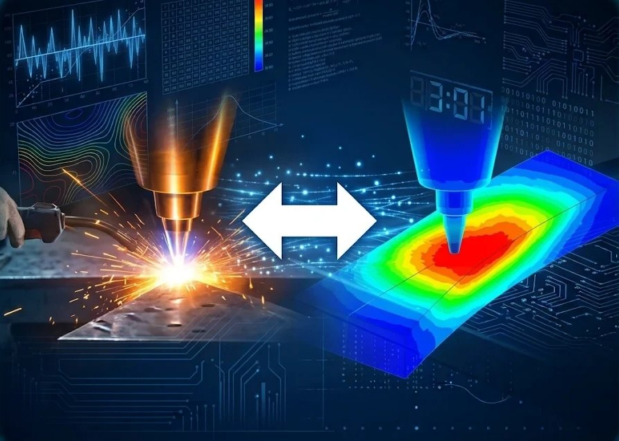
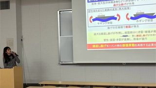
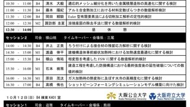
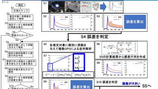
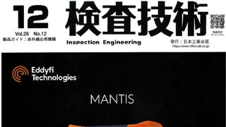
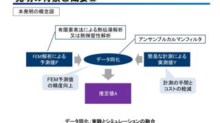

※画像は生成AIで作成したイメージです。このテーマの説明文は準備中です。
関連するページ
関連するお知らせ（題名から自動で集めたもの。12件）
 報告：柴原正和教授が、ダイキン工業 TIC (テクノロジー・イノベーションセンター) において、大規模溶接解析および溶接・ガス加熱工程のデジタルツインに関する講演を行いました。
報告：柴原正和教授が、ダイキン工業 TIC (テクノロジー・イノベーションセンター) において、大規模溶接解析および溶接・ガス加熱工程のデジタルツインに関する講演を行いました。
報告：柴原研究室・生島研究室合同の冬季中間発表会が行われました。FEM等の数値シミュレーションを活用した溶接、接合、ひずみ取り、プレス、切削、金属積層造形、AI、デジタルツイン等に関する幅広い内容の研究発表が行われ、活発な議論がなされました。 報告：前田新太郎 特任助教が l-siteなんばで行われた『第150回テクノラボツアー 「デジタルツイン」が拓く近未来社会、その先にあるもの』にて講演しました。
報告：前田新太郎 特任助教が l-siteなんばで行われた『第150回テクノラボツアー 「デジタルツイン」が拓く近未来社会、その先にあるもの』にて講演しました。
柴原研究室・生島研究室合同の秋季中間発表会が行われました。FEM等の数値シミュレーションを活用した溶接、接合、ひずみ取り、プレス、切削、AI、デジタルツイン等に関する幅広い内容の研究発表が行われ、活発な議論がなされました。 論文：溶接学会論文集に投稿していた14本の論文が本年7月に採択されました。今回は、その中から【AI線状加熱およびデジタルツインに関する研究】に関する5本の論文をご紹介いたします。
論文：溶接学会論文集に投稿していた14本の論文が本年7月に採択されました。今回は、その中から【AI線状加熱およびデジタルツインに関する研究】に関する5本の論文をご紹介いたします。
国際特許：柴原研究室の国際特許(デジタルツイン)がJSTによるヒアリング審査を経て、アメリカ、中国、ドイツ、イギリス、フランスの5カ国への移行支援が決定しました。 柴原研究室が「溶接学会論文集」に投稿していた「火力発電保守管理デジタルツイン」に関する論文がPublishされました。
柴原研究室が「溶接学会論文集」に投稿していた「火力発電保守管理デジタルツイン」に関する論文がPublishされました。
柴原正和准教授と生島一樹准教授が「検査技術」に寄稿していた「デジタルツインシステムの開発」に関する解説記事がPublishされました。 松岡諒らがデジタルツインに関するパラメータ推定に関する国際特許出願(PCT出願)を行いました。
松岡諒らがデジタルツインに関するパラメータ推定に関する国際特許出願(PCT出願)を行いました。
柴原研究室の国際特許(データ同化)がJSTによるヒアリング審査を経て、米国、ドイツ、フランス、イギリスの4カ国への移行支援が決定しました。 松岡諒らがデジタルツインに関するパラメータ推定に関する特許出願を行いました。
松岡諒らがデジタルツインに関するパラメータ推定に関する特許出願を行いました。- デジタルツイン技術を用いた石炭火力発電プロジェクトがNEDO「カーボンリサイクル・次世代火力発電等技術開発」に採択されました。